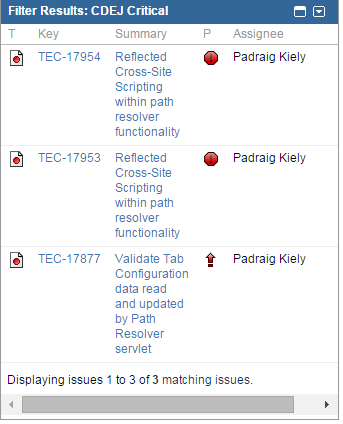
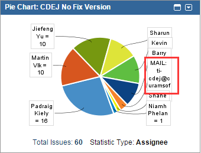
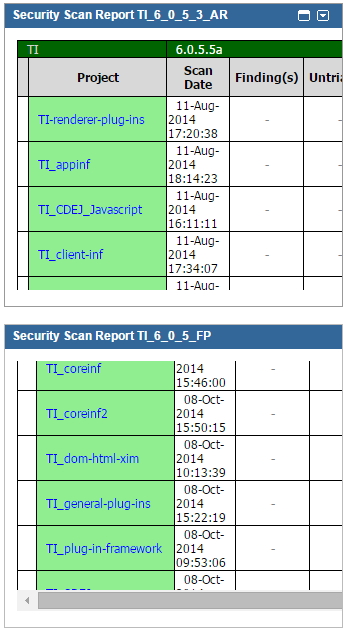
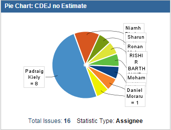

Introduction
Jira support is part of the internal support we perform in CDEJ along with the Snag support. Every week, we have a delegated JIRA gatekeeper in rota to monitor all JIRA tickets coming into CDEJ team with the assignee ti-cdej@curamsoftware.com. All other CDEJ members will get assigned with these JIRA tickets from the gatekeeper.
Gatekeeper
The gatekeeper is the starting point for this process. They watch all the JIRAs coming into CDEJ and assign to other CDEJ members after initial investigation .
Responsibilities
The responsibilities for the gatekeeper is to:
1. understand what the issue is.
2. try reproducing the issue and close it if it is not reproducible.
3. see if the issue is belong to CDEJ if it is reproducible.
4. reset the IBM severity and priority if it is not set correctly.
5. assign the JIRA tickets to proper individual who has the domain knowledge.
CDEJ Team Dashboard
The gatekeeper focuses on the following area in the CDEJ Team Dashboard to monitor JIRAs.
1. CDEJ Critical - All JIRAs shown in this filter need to be investigated and assigned out immediately.

2. CDEJ No Fix Version - Watch the MAIL: ti-cdej@curamsoftware.com section highlighted below. All of them needs to be assigned out.

3. Security Scan Report - Monitor new security defects.

Other CDEJ members
The other CDEJ members (assignees) will further investigate the issues when they get assigned with any JIRAs by gatekeeper.
Responsibilities
The responsibilities for the CDEJ memebers who are assigned with the JIRA, they need to:
1. further investigate the issue.
2. find a root of the issue if possible.
3. give a proper estimate for fixing it.
4. assign back to the manager for planning.
CDEJ Team Dashboard
The assignees will use the section "CDEJ no Estimate" in the CDEJ Team Dashboard is to monitor the JIRAs assigned to them. They need to make sure all these JIRAs assigned to them are taken the proper attention.

Others
CDEJ_ACCEPT_<<NAME>> is a email filter token agreed in CDEJ when assigning the JIRAs. So the gatekeeper needs to ensure that this token is used every time they assign out tickets and all the CDEJ members needs to set up this filter in their Lotus Notes so that these emails are got proper attention.